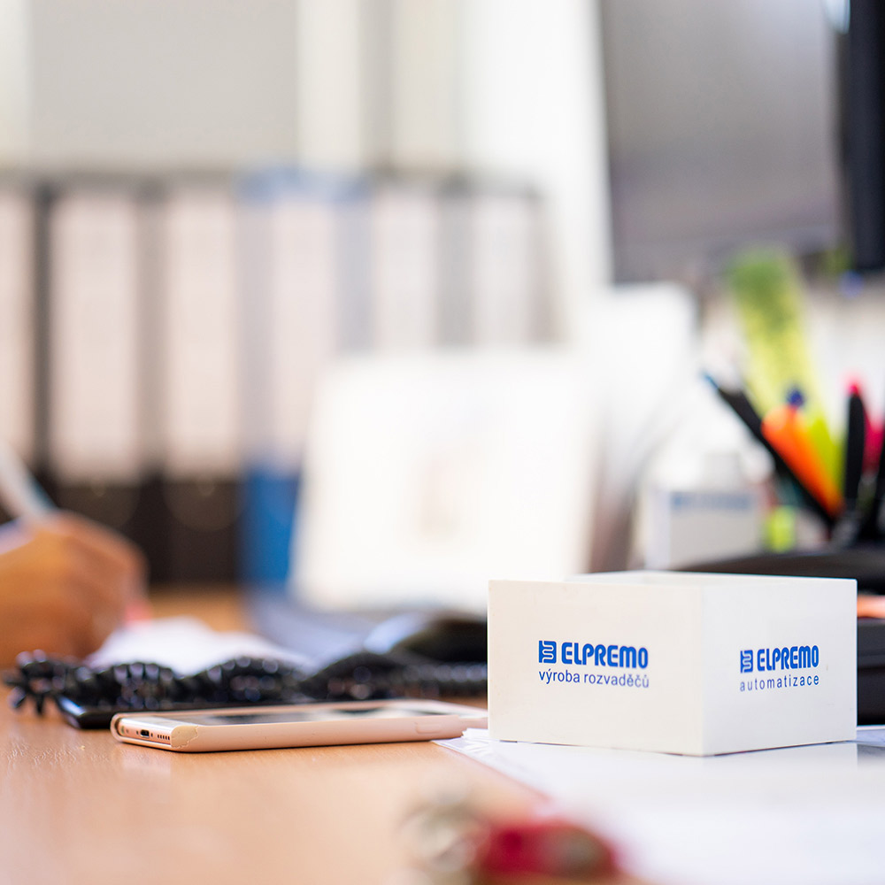
IPC/WHMA A-620
Vodiče 0,08 až 35 mm²
Zakázková výroba kabelových svazků
Kompletní výroba kabelových svazků pro strojírenství, automatizaci i kolejová vozidla dle normy IPC/WHMA A-620.
Spojení poctivého řemesla Elektro Schubert a technologické síly Elpremo. Vyrábíme certifikovanou kabelovou konfekci, realizujeme automatizované stříhání a lisování kontaktů a dodáváme rozvaděče nízkého napětí se 100% testováním na testerech CableEye a Cirris.
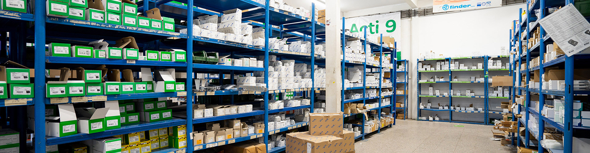
Příběh společnosti Schubert & Elpremo spol. s r.o. je důkazem, že v podhůří Rychlebských hor v Javorníku vzniká špičková elektrotechnická produkce srovnatelná se světovými lídry.
Kořeny naší výroby v Javorníku sahají hluboko do devadesátých let. Společnost vznikla fúzí dvou stabilních a respektovaných partnerů: firmy Elektro Schubert pod vedením Vladimíra Schuberta a společnosti Elpremo spol. s r.o. v čele s Vladimírem Kočím.
Díky investicím do poloautomatických a automatických linek na stříhání, odplášťování vodičů, stolních krimpovacích lisů s monitorováním lisovací síly a testovacích stanic CableEye a Cirris dodáváme kabelové formy a rozvaděče nejnáročnějším strojírenským závodům v Česku i zahraničí.
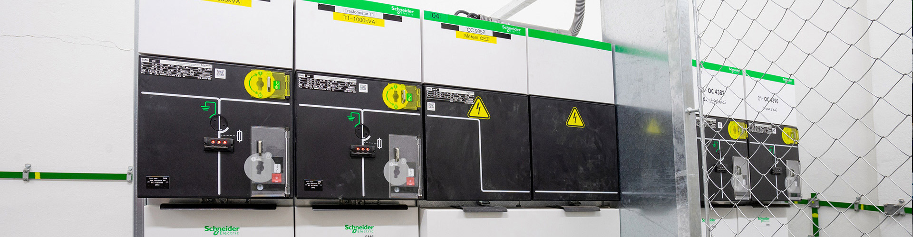
Puškinova 16, 790 70 Javorník • Kabelová konfekce a montáž rozvaděčů
Zahájení elektrotechnických montáží, obchodu s materiálem a prvních zakázek kabelové konfekce v regionu Jesenicka a Olomoucka.
Pořízení automatických odizolovacích linek a zavedení přesného strojního lisování kontaktů pro průmyslové stroje a zařízení.
Strategické sloučení kapacit obou firem do jedné právní entity se sídlem v Javorníku (IČO 04844777), posílení výrobní kapacity pro strojírenství.
Zavedení 100% počítačové kontroly všech kabelových svazků na testerech CableEye a Cirris s certifikovaným protokolem o zkoušce.
Dodávky kabelových svazků, výroba rozvaděčů NN a průmyslová automatizace pro partnery v ČR i po celé Evropě.
Od precizního kabelového svazku přes strojní krimpování pinů až po ucelené rozvaděče nízkého napětí a programování automatizace.
Zakázková výroba kabelových forem, propojovacích vodičů a svazků pro strojírenství, automotive i kolejová vozidla.
Typově zkoušené rozvaděče nízkého napětí pro distribuci energie, výrobní linky a technologické rozvody.
Návrh a realizace průmyslových řídicích systémů, programování automatů PLC a operátorských panelů HMI/SCADA.
Komplexní elektroinstalační práce v halách, periodická údržba, revize elektrozařízení a výstavba fotovoltaických elektráren.
Vyberte si kategorii nebo vyhledejte konkrétní technologii, normu či požadovaný průřez vodiče. Každá karta nabízí detailní technické parametry.

IPC/WHMA A-620Kompletní výroba kabelových svazků pro strojírenství, automatizaci i kolejová vozidla dle normy IPC/WHMA A-620.
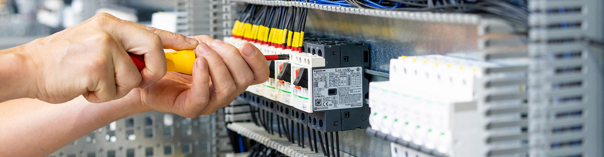
ČSN EN 60204-1Přesné dělení, odplášťování a odizolování jednožilových i vícežilových kabelů s vysokou opakovatelností.
Lisování dutinek, fastonů, oček i precizních pinů s průběžným měřením výšky krimpování a tahovými zkouškami.
Ruční a poloautomatické pájení konektorů, senzorů a plochých páskových kabelů technologií IDC.
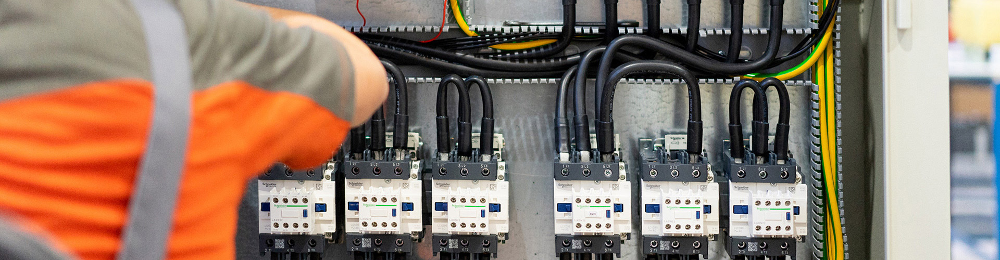
ČSN EN 60300 / ISO 9001100% výstupní testování zapojení, zkratů, odporu vodičů a dielektrické pevnosti s protokolem o zkoušce.
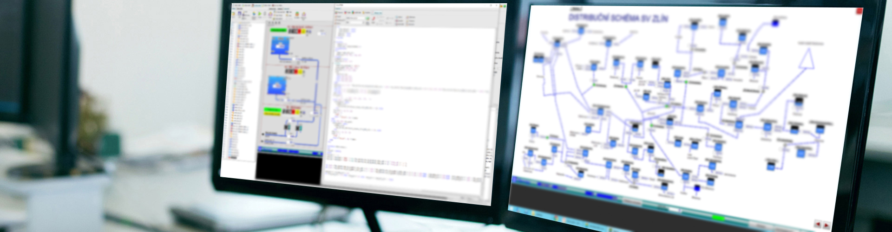
ČSN EN 61439-1Kompletace přístrojových panelů, osazování svorkovnicových skříněk a mechanická montáž podsestav.
Zakázková výroba průmyslových, domovních a distribučních rozvaděčů NN včetně kusových zkoušek a certifikace.
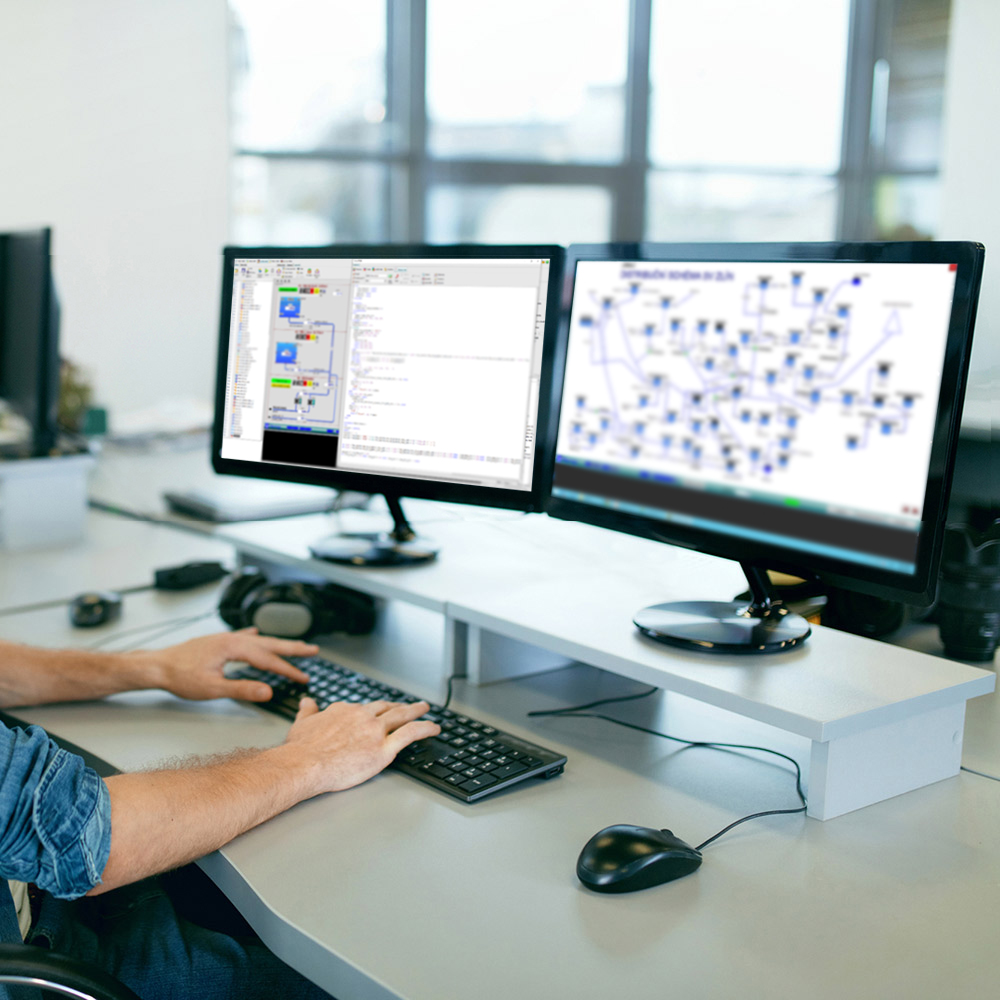
ČSN EN 61131 / ISO 13849Programování PLC automatů, vývoj vizualizací SCADA/HMI a komplexní automatizace výrobních technologií.
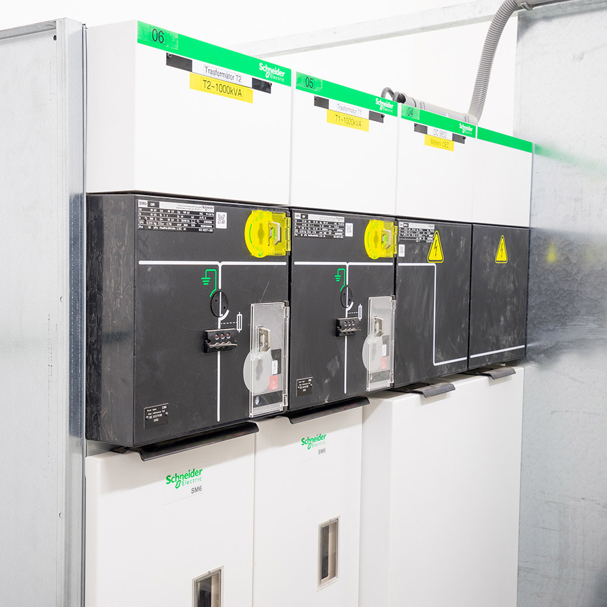
ČSN 33 2000Montáže kabelových tras, technologických rozvodů, osvětlení a připojování strojních zařízení.
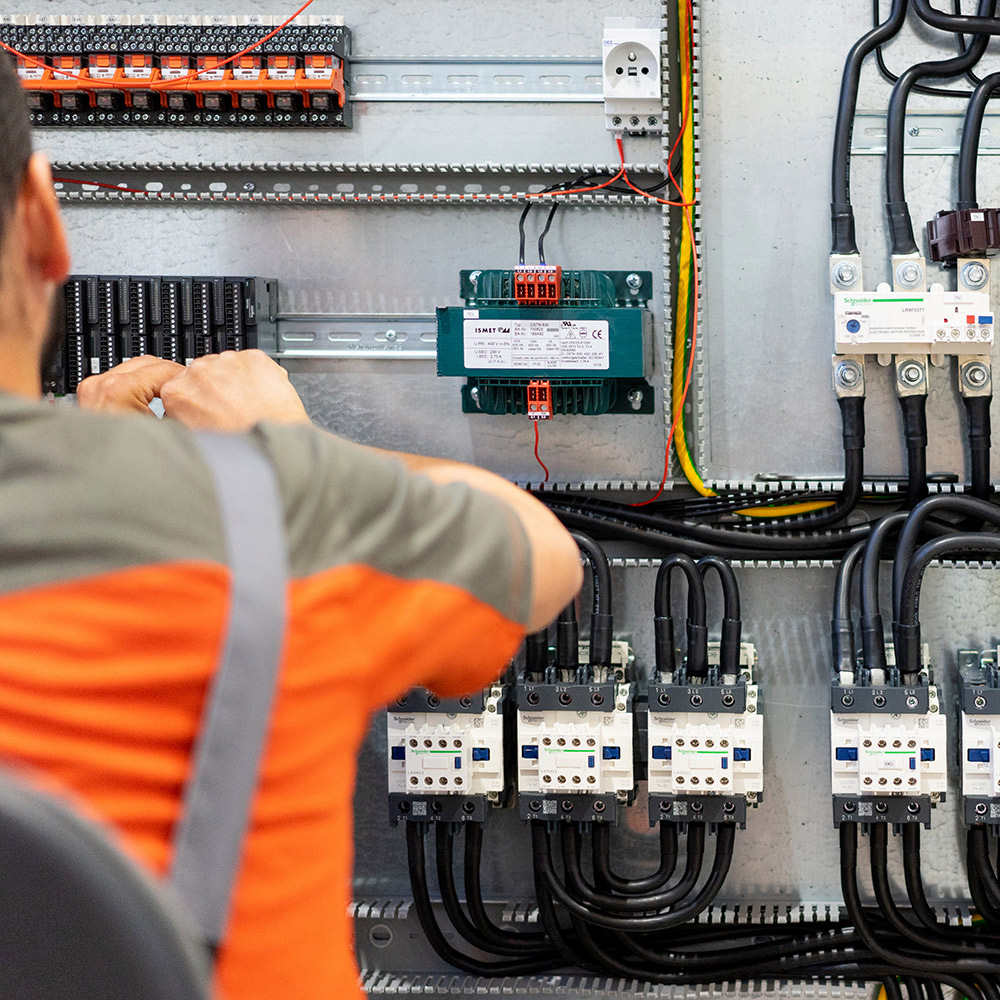
ČSN 33 1500Pravidelný servis elektroinstalací, diagnostika termokamerou, revizní zprávy a odstraňování závad.
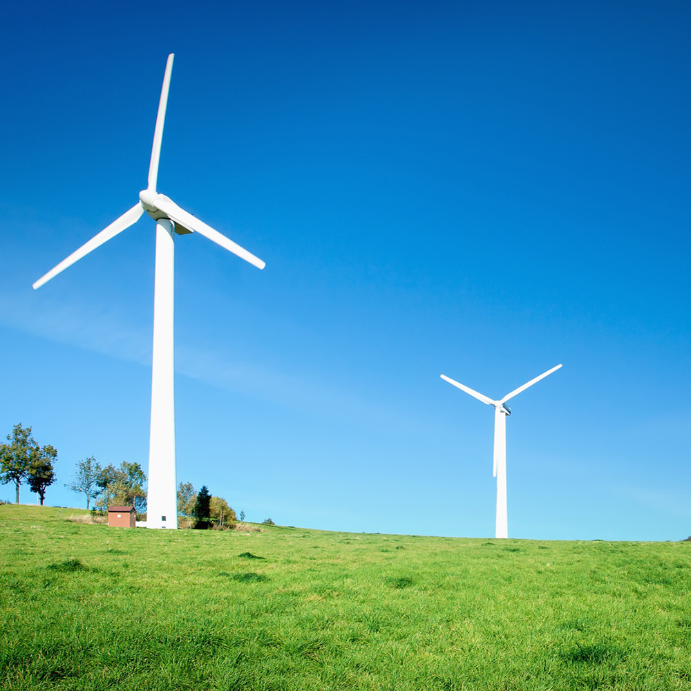
ČSN 33 2000 (FVE)Výstavba a připojení fotovoltaických elektráren pro výrobní haly, areály a komerční objekty.
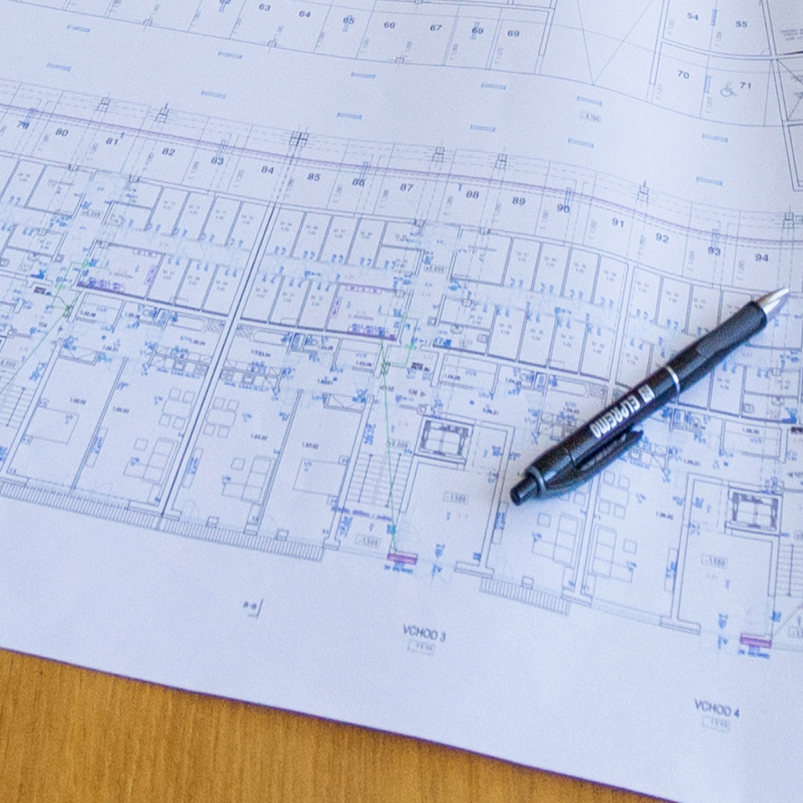
ČSN EN 61082 / ISO 9001Zpracování kompletní projektové dokumentace silnoproudu, slaboproudu a MaR ve všech stupních.
Kvalita a bezpečnost elektrotechnických výrobků z Javorníku stojí na třech pilířích: mezinárodních normách, kalibrovaných přístrojích a zkušeném týmu.
Počítačově řízené testování zapojení kabelových forem. Automatická detekce chybně zapojených žil, zkratů a měření odporu s protokolem o zkoušce pro každou dodávku.
Každé nastavení krimpovacího lisu podléhá mechanickým tahovým zkouškám dle normy ČSN EN 60352-2 a optické kontrole výšky zalisování mikro-metrem.
Zavedený a auditovaný systém řízení jakosti provází celý životní cyklus zakázky – od nákupu certifikovaných materiálů po výstupní expedici.
Výrobní závod Schubert & Elpremo spol. s r.o. sídlí v Javorníku. Níže naleznete přímé kontakty na vedení, obchod i účtárnu.
Máte zájem o výrobu kabelových svazků, montáž rozvaděčů nebo technickou konzultaci? Vyplňte formulář a my se vám ozveme.